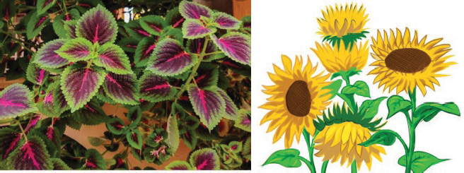
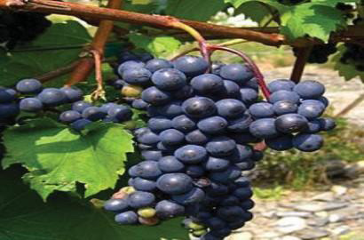

attractive garden. Moreover, flowers are useful in daily life. They are used as sources of herbs, and income when sold as ornaments and symbols of beauty. Therefore, people should preserve plants and flowers. Figure 1.7 shows beautiful flowers, leaves and fruits.

Coleus plants
Sunflower
Perennial bulb plant

Grapes
Figure 1.7: Fine Art manifestation in plants
Fine art manifestation on insect bodies: An insect is any member of the largest class of the phylum Arthropoda, with segmented bodies, jointed legs, and external skeletons. Some insects carry natural beauty on their bodies, for example, butterflies have attractive colours and ladybird bugs have beautiful dots. Others are mosquito, centipede, millipede, spider and scorpion. Tourists travel many kilometres to see attractive insects abroad. Following that, the host country increases its income. People should avoid using harmful chemicals that destroy environments to preserve the life of insects and other living things. Figure 1.8 shows art manifestation on insect bodies.